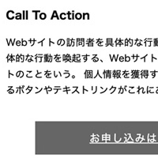
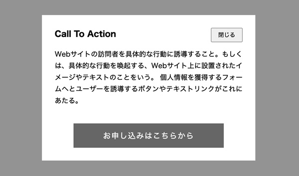

CTAを数秒後に表示
- CTA（Call To Action）

完成例
- ２秒後に表示

記述例
- id名「cta」は、オーバレイのグレー背景を指定するため
index.html
<!DOCTYPE html> <html lang="ja"> <head> <meta charset="UTF-8"> <meta name="viewport" content="width=device-width, initial-scale=1.0"> <title>CTA</title> <link rel="stylesheet" href="css/style.css"> <script src="https://ajax.googleapis.com/ajax/libs/jquery/3.7.1/jquery.min.js" defer></script> <script src="js/script.js" defer></script> </head> <body> <div class="container"> <div id="cta"> <div class="pr"> <button class="close">閉じる</button> <h3>Call To Action</h3> <p>Webサイトの訪問者を具体的な行動に誘導すること。もしくは、具体的な行動を喚起する、Webサイト上に設置されたイメージやテキストのことをいう。 個人情報を獲得するフォームへとユーザーを誘導するボタンやテキストリンクがこれにあたる。</p> <a href="http://www.google.com" class="pr_btn" target="blunk">お申し込みはこちらから</a> </div><!-- /.pr --> </div><!-- /.cta --> </div><!-- /.container --> </body> </html>
style.css
@charset "UTF-8"; /*------------------------------------------- reset -------------------------------------------*/ *, *::before, *::after { margin: 0; padding: 0; box-sizing: border-box; } img { vertical-align: bottom; max-width: 100%; } a { color: inherit; text-decoration: none; } /*------------------------------------------- body -------------------------------------------*/ body { font-family: sans-serif; font-size: 16px; line-height: 1.5; } /*------------------------------------------- CTA -------------------------------------------*/ #cta { position: fixed; top: 0; left: 0; background-color: rgba(40, 40, 40, 0.5); width: 100%; height: 100vh; display: none; } #cta > .pr { position: absolute; top: 0; left: 0; right: 0; bottom: 0; width: min(80%, 500px); height: fit-content; margin: auto; padding: 30px; background-color: #fff; } #cta > .pr .close { position: absolute; top: 30px; right: 30px; padding: 5px 15px; } #cta > .pr p { margin-top: 20px; text-align: justify; line-height: 1.7; } #cta .pr_btn { display: block; width: 80%; margin: 40px auto 0; padding: 15px 0; text-align: center; background-color: #666; color: #fff; font-size: 18px; letter-spacing: 0.08em; } @media screen and (max-width: 767px) { #cta > .pr p { font-size: 0.9rem; line-height: 1.6; } }
script.js
$(function () { /* ================================================= Call To Actionを、一定時間後に発動させる設定 ================================================= */ // id名「cta」の値を取得 const cta = $('#cta'); // ctaを、最初は非表示にしておく cta.hide(); function call() { cta.fadeIn(); } // 一定時間後に発動させる内容を関数にしておく setTimeout(call, 2000); // setTimeoutで、2秒後に関数callを呼び出している const pr_close = $('#cta .close'); pr_close.on('click', function () { cta.fadeOut(); }); // 閉じるボタンを押すと、ctaがフェードアウトする cta.on('click', function () { $(this).fadeOut(); }); // cta自身をクリックすると自身がフェードアウトする const pr = $('#cta .pr'); pr.on('click', function (e) { e.stopPropagation(); // クリックイベントの伝播を防ぐ }) // 厳密には、pr上のどこを押しても親要素に場所までイベントが伝播してしまうので // その伝播を防ぐ必要がある });